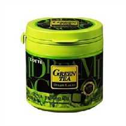
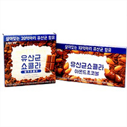
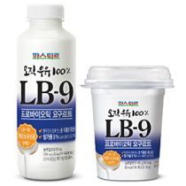
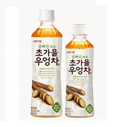
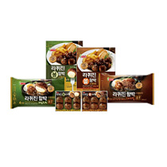
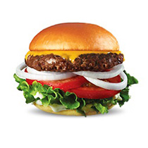
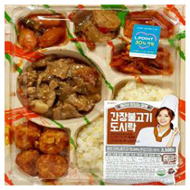
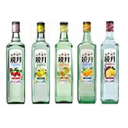
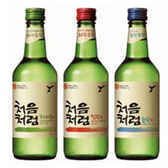

HOME > 연구소활동 > 히트상품
히트상품
제과
-

드림카카오 녹차
- 드림카카오 녹차
- 드림카카오는 카카오의 진한 맛과 향이 살아있는 하이카카오 초콜릿 브랜드로서 폴리페놀이 풍부한 다크 초콜릿이다.
- 드림카카오 녹차 출시로 녹차 폴리페놀과 카카오 폴리페놀을 한번에 섭취함으로서 건강하게 초콜릿을 즐길 수 있다.
-

유산균 쇼콜라
- 유산균 쇼콜라
- 국내 최초, 살아있는 유산균이 들어있는 초콜릿이다.
- 진하고 부드러운 밀크 초콜릿과 고소한 아몬드를 초콜릿으로 코팅한 아몬드볼 2종이 출시 되었다.
-

요구르트 젤리
- 요구르트 젤리
- 롯데 요구르트 젤리는 롯데제과(주)와 세븐일레븐이 협력하여 5월에 출시된 제품이다.
- 요구르트와 젤리의 콜라보레이션이라는 부제 아래 쫄깃한 식감과 상큼달콤한 맛이 특징인 요구르트 젤리로 디자인하여 재미있게 요구르트 젤리를 즐길 수 있도록 했다.
-

빼빼로 바닐라 블랙
- 빼빼로 바닐라 블랙
- 빼빼로는 1983년 초코빼빼로 이후로 아몬드, 누드 등 여러 제형과 새로운 맛으로 꾸준히 출시되고 있는 국내에서 가장 사랑 받는 대표 초코스틱 과자 제품이다.
-

팜온더로드 통넛츠바
- 팜온더로드 통넛츠바
- 믿을수 있는 좋은 농장에서 자란 자연의 원물을 독창적인 레시피로 담아 더욱 맛있는 팜온더로드.
- 통넛츠바 애플시나몬 아몬드, 땅콩, 캐슈, 피칸, 건포도, 사과가 70% 이상 함유되어 있어 식물에서 유래된 단백질과 식이섬유가 다량 함유되어 있다. 또한 시나몬이 함유되어 풍부한 맛을 냅니다.
음료
-

LB-9 프로바이오틱
- LB-9 프로바이오틱
- 오직 단 하나의 재료, 우유만을 발효해서 만든 자연에 가까운 순수 플레인 요구르트 입니다.
- 유화제, 안정제, 색소, 향료는 물론 당류까지 첨가물을 빼서 안심하고 드실 수 있습니다. 강한 생명력을 지녀 한국인의 장에 알맞은 특허받은 김치유래 식물성 유산균 LB-9 10억마리를 더해 더욱 건강해진 프리미엄 요구르트 입니다.
-

델몬트 주스바
- 델몬트 주스바
- 농축환원 주스와 차별화한 프리미엄 주스로 무균충전 시스템으로 생산하여 유통기한도 일반 냉장 주스보다 길고 원과 고유의 맛을 재현한 오렌지, 자몽 100% NFC 제품입니다.
-

엄마의 마음 위드맘
- 엄마의 마음 위드맘
- 아기를 생각하는 엄마의 마음을 대신하여 제품에 첨가되는 원재료 하나하나를 생산지부터 유통과정까지 꼼꼼하게 만든 프리미엄 제품입니다.
-

초가을 우엉차
- 초가을 우엉차
- 경상남도 진주에서 재배한 100% 국산 우엉을 겉껍질까지 통째로 우려내어 깊고 구수한 맛을 내는 우엉차입니다. 잘빠진하루 초가을 우엉차는 식이섬유, 사포닌 등이 풍부하여 면역력 강화 및 다이어트에 도움을 주는 '날씬하고 건강한 차음료'이며 휴대성 및 음용 편의성을 위해 페트병 중간을 잘록하게 만들어 그립감을 향상시켰습니다.
-

목장우유
푸드
-

라퀴진 함박스테이크
- 라퀴진 함박스테이크
- 두툼하게 다져낸 돼지고기를 정성껏 빚어 부드러운 식감과 풍부한 육즙을 잡았습니다.
- 저압성형공법과 특수 제조된 오븐은 '겉은 바삭 속은 촉촉한' 정통 함박스테이크 맛을 살렸습니다.
-

AZ버거 오리지널
- AZ버거 오리지널
- 호주청정우로 만들어진 육즙 가득한 빅 사이즈 순 쇠고기 패티와 통밀발효종 효모가 사용되어 부드러운 브리오쉬 번 좋은 재료와 맛의 A to Z를 느낄 수 있는 프리미엄 제품
-

간장불고기 도시락
- 간장불고기 도시락
- 선호도 높은 반찬(불고기, 돈까스, 소시지볶음, 볼어묵볶음)으로 구성된 도시락입니다.
-

의성마늘 베이컨
- 의성마늘 베이컨
- 의성마늘과 천일염으로 베이컨 특유의 고소함과 건강함을 더 했습니다. 48시간 저온숙성으로 부드럽고, 참나무로 정성껏 훈연하여 베이컨 맛을 업그레이드 시켰습니다.
-

모짜렐라 인 더 버거
주류
-

처음처럼 유자
-

훈와리 경월
- 훈와리 경월
- 훈와리 경월(ふんわり 鏡月)은 일본의 독특한 음주 문화인 ‘와리(割り, 섞어 마시기) 음용법＇을 겨냥해 만든 제품입니다.
-

클라우드
- 클라우드
- 클라우드는 한국을 대표하는 맥주를 선보이고자 한국을 의미하는 Korea의 “K”와 풍부한 맥주 거품을 형상화한 구름의 영문 ‘Cloud’ 단어를 결합해 브랜드명에 담았습니다.
-

처음처럼
- 처음처럼
- 처음처럼은 술을 마신 다음날에도 몸 상태가 원래대로 돌아온다는 뜻으로 신영복 교수의 작품을 상표화하여 기존 소주와 차별화되게 네글자의 브랜드로 태어났습니다.
-

설중매